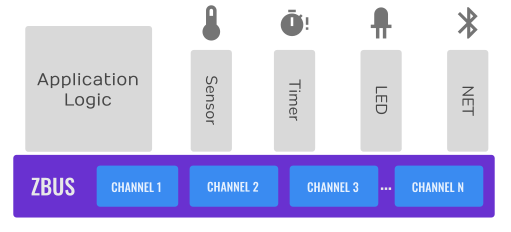
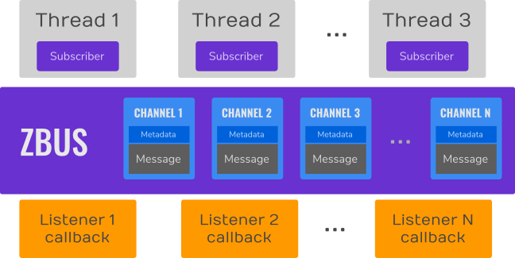
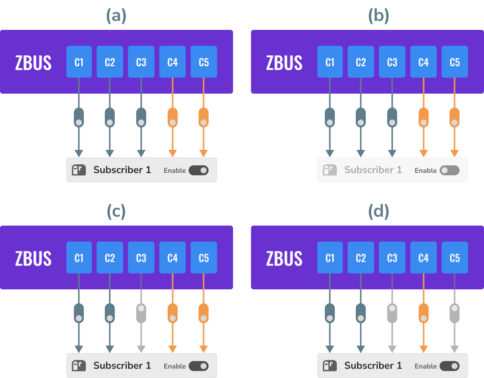
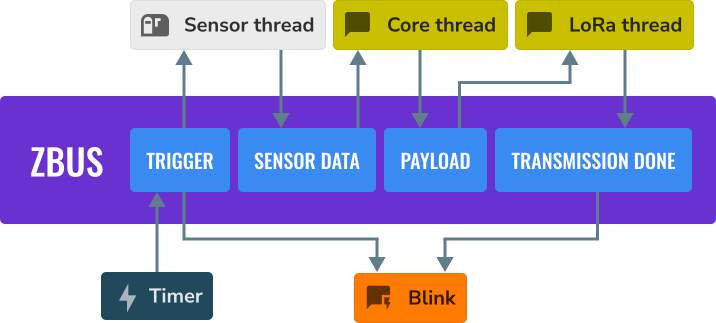
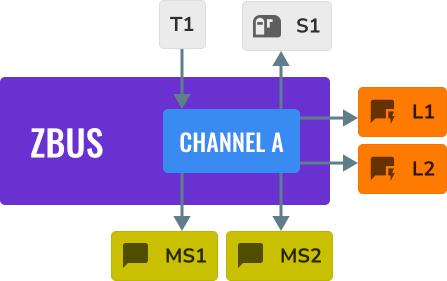
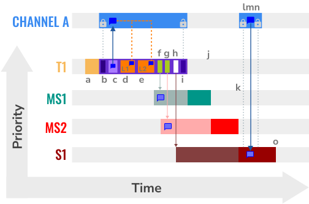
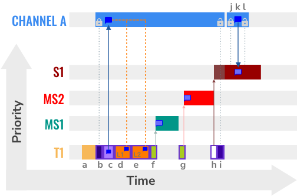
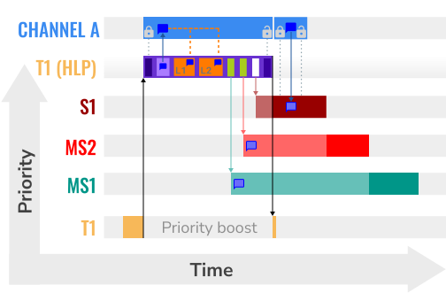
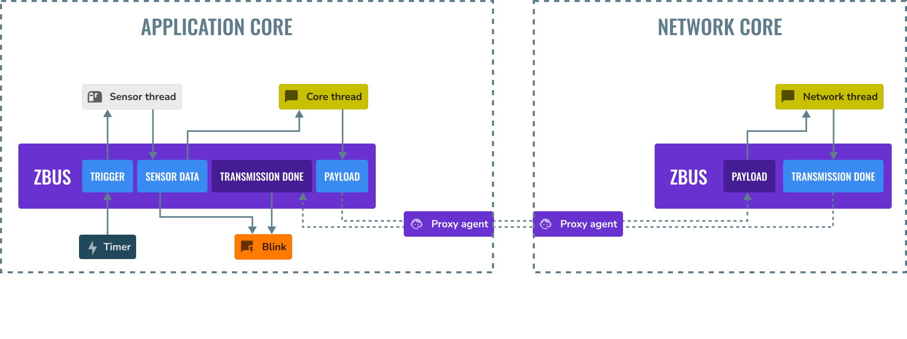

Zephyr bus (zbus)
The Zephyr bus - zbus is a lightweight and flexible software bus enabling a simple way for threads to talk to one another in a many-to-many way.
Concepts
Threads can send messages to one or more observers using zbus. It makes the many-to-many communication possible. The bus implements message-passing and publish/subscribe communication paradigms that enable threads to communicate synchronously or asynchronously through shared memory.
The communication through zbus is channel-based. Threads (or callbacks) use channels to exchange messages. Additionally, besides other actions, threads can publish and observe channels. When a thread publishes a message on a channel, the bus will make the message available to all the published channel’s observers. Based on the observer’s type, it can access the message directly, receive a copy of it, or even receive only a reference of the published channel.
The figure below shows an example of a typical application using zbus in which the application logic (hardware independent) talks to other threads via software bus. Note that the threads are decoupled from each other because they only use zbus channels and do not need to know each other to talk.
{kind=link}

A typical zbus application architecture.
The bus comprises:
Set of channels that consists of the control metadata information, and the message itself;
Virtual Distributed Event Dispatcher (VDED), the bus logic responsible for sending notifications/messages to the observers. The VDED logic runs inside the publishing action in the same thread context, giving the bus an idea of a distributed execution. When a thread publishes to a channel, it also propagates the notifications to the observers;
Threads (subscribers and message subscribers) and callbacks (listeners) publishing, reading, and receiving notifications from the bus.
{kind=link}

ZBus anatomy.
The bus makes the publish, read, claim, finish, notify, and subscribe actions available over channels. Publishing, reading, claiming, and finishing are available in all RTOS thread contexts, including ISRs. The publish and read operations are simple and fast; the procedure is channel locking followed by a memory copy to and from a shared memory region and then a channel unlocking. Another essential aspect of zbus is the observers. There are three types of observers:
{kind=link}
ZBus observers.
Listeners, a callback that the event dispatcher executes every time an observed channel is published or notified;
Async Listeners, a callback that the event dispatcher schedules to execute in a work queue (system work queue by default) every time an observed channel is published or notified;
Subscriber, a thread-based observer that relies internally on a message queue where the event dispatcher puts a changed channel’s reference every time an observed channel is published or notified. Note this kind of observer does not receive the message itself. It should read the message from the channel after receiving the notification;
Message subscribers, a thread-based observer that relies internally on a FIFO where the event dispatcher puts a copy of the message every time an observed channel is published or notified.
Channel observation structures define the relationship between a channel and its observers. For
every observation, a pair channel/observer. Developers can statically allocate observation using the
ZBUS_CHAN_DEFINE or ZBUS_CHAN_ADD_OBS. There are also runtime observers,
enabling developers to create runtime observations. It is possible to disable an observer entirely
or observations individually. The event dispatcher will ignore disabled observers and observations.
{kind=link}

ZBus observation mask.
The above figure illustrates some states, from (a) to (d), for channels from C1 to C5,
Subscriber 1, and the observations. The last two are in orange to indicate they are dynamically
allocated (runtime observation). (a) shows that the observer and all observations are enabled. (b)
shows the observer is disabled, so the event dispatcher will ignore it. (c) shows the observer
enabled. However, there is one static observation disabled. The event dispatcher will only stop
sending notifications from channel C3. In (d), the event dispatcher will stop sending
notifications from channels C3 and C5 to Subscriber 1.
Suppose a usual sensor-based solution is in the figure below for illustration purposes. When
triggered, the timer publishes to the Trigger channel. As the sensor thread subscribed to the
Trigger channel, it receives the sensor data. Notice the VDED executes the Blink because it
also listens to the Trigger channel. When the sensor data is ready, the sensor thread publishes
it to the Sensor data channel. The core thread receives the message as a Sensor data channel
message subscriber, processes the sensor data, and stores it in an internal sample buffer. It
repeats until the sample buffer is full; when it happens, the core thread aggregates the sample
buffer information, prepares a package, and publishes that to the Payload channel. The Lora
thread receives that because it is a Payload channel message subscriber and sends the payload to
the cloud. When it completes the transmission, the Lora thread publishes to the Transmission
done channel. The VDED executes the Blink again since it listens to the Transmission done
channel.
{kind=link}

ZBus sensor-based application.
This way of implementing the solution makes the application more flexible, enabling us to change things independently. For example, we want to change the trigger from a timer to a button press. We can do that, and the change does not affect other parts of the system. Likewise, we would like to change the communication interface from LoRa to Bluetooth; we only need to change the LoRa thread. No other change is required in order to make that work. Thus, the developer would do that for every block of the image. Based on that, there is a sign zbus promotes decoupling in the system architecture.
Another important aspect of using zbus is the reuse of system modules. If a code portion with well-defined behaviors (we call that module) only uses zbus channels and not hardware interfaces, it can easily be reused in other solutions. The new solution must implement the interfaces (set of channels) the module needs to work. That indicates zbus could improve the module reuse.
The last important note is the zbus solution reach. We can count on many ways of using zbus to enable the developer to be as free as possible to create what they need. For example, messages can be dynamic or static allocated; notifications can be synchronous or asynchronous; the developer can control the channel in so many different ways claiming the channel, developers can add their metadata information to a channel by using the user-data field, the discretionary use of a validator enables the systems to be accurate over message format, and so on. Those characteristics increase the solutions that can be done with zbus and make it a good fit as an open-source community tool.
Virtual Distributed Event Dispatcher
The VDED execution always happens in the publisher’s context. It can be a thread or an ISR. Be careful with publications inside ISR because the scheduler won’t preempt the VDED. Use that wisely. The basic description of the execution is as follows:
The channel lock is acquired;
The channel receives the new message via direct copy (by a raw
memcpy());The event dispatcher logic executes the listeners, sends a copy of the message to the message subscribers, and pushes the channel’s reference to the subscribers’ notification message queue in the same sequence they appear on the channel observers’ list. The listeners can perform non-copy quick access to the constant message reference directly (via the
zbus_chan_const_msg()function) since the channel is still locked;At last, the publishing function unlocks the channel.
To illustrate the VDED execution, consider the example illustrated below. We have four threads in
ascending priority S1, MS2, MS1, and T1 (the highest priority); two listeners,
L1 and L2; and channel A. Supposing L1, L2, MS1, MS2, and S1 observer
channel A.
{kind=link}

ZBus VDED execution example scenario.
The following code implements channel A. Note the struct a_msg is illustrative only.
ZBUS_CHAN_DEFINE(a_chan, /* Name */
struct a_msg, /* Message type */
NULL, /* Validator */
NULL, /* User Data */
ZBUS_OBSERVERS(L1, L2, MS1, MS2, S1), /* observers */
ZBUS_MSG_INIT(0) /* Initial value {0} */
);
In the figure below, the letters indicate some action related to the VDED execution. The X-axis represents the time, and the Y-axis represents the priority of threads. Channel A’s message, represented by a voice balloon, is only one memory portion (shared memory). It appears several times only as an illustration of the message at that point in time.
{kind=link}

ZBus VDED execution detail for priority T1 > MS1 > MS2 > S1.
The figure above illustrates the actions performed during the VDED execution when T1 publishes to channel A. Thus, the table below describes the activities (represented by a letter) of the VDED execution. The scenario considers the following priorities: T1 > MS1 > MS2 > S1. T1 has the highest priority.
Actions |
Description |
|---|---|
a |
T1 starts and, at some point, publishes to channel A. |
b |
The publishing (VDED) process starts. The VDED locks the channel A. |
c |
The VDED copies the T1 message to the channel A message. |
d, e |
The VDED executes L1 and L2 in the respective sequence. Inside the listeners, usually, there
is a call to the |
f, g |
The VDED copies the message and sends that to MS1 and MS2 sequentially. Notice the threads get ready to execute right after receiving the notification. However, they go to a pending state because they have less priority than T1. |
h |
The VDED pushes the notification message to the queue of S1. Notice the thread gets ready to execute right after receiving the notification. However, it goes to a pending state because it cannot access the channel since it is still locked. |
i |
VDED finishes the publishing by unlocking channel A. The MS1 leaves the pending state and starts executing. |
j |
MS1 finishes execution. The MS2 leaves the pending state and starts executing. |
k |
MS2 finishes execution. The S1 leaves the pending state and starts executing. |
l, m, n |
The S1 leaves the pending state since channel A is not locked. It gets in the CPU again and starts executing. As it did receive a notification from channel A, it performed a channel read (as simple as lock, memory copy, unlock), continues its execution and goes out of the CPU. |
o |
S1 finishes its workload. |
The figure below illustrates the actions performed during the VDED execution when T1 publishes to channel A. The scenario considers the following priorities: T1 < MS1 < MS2 < S1.
{kind=link}

ZBus VDED execution detail for priority T1 < MS1 < MS2 < S1.
Thus, the table below describes the activities (represented by a letter) of the VDED execution.
Actions |
Description |
|---|---|
a |
T1 starts and, at some point, publishes to channel A. |
b |
The publishing (VDED) process starts. The VDED locks the channel A. |
c |
The VDED copies the T1 message to the channel A message. |
d, e |
The VDED executes L1 and L2 in the respective sequence. Inside the listeners, usually, there
is a call to the |
f |
The VDED copies the message and sends that to MS1. MS1 preempts T1 and starts working. After that, the T1 regain MCU. |
g |
The VDED copies the message and sends that to MS2. MS2 preempts T1 and starts working. After that, the T1 regain MCU. |
h |
The VDED pushes the notification message to the queue of S1. |
i |
VDED finishes the publishing by unlocking channel A. |
j, k, l |
The S1 leaves the pending state since channel A is not locked. It gets in the CPU again and starts executing. As it did receive a notification from channel A, it performs a channel read (as simple as lock, memory copy, unlock), continues its execution, and goes out the CPU. |
HLP priority boost
ZBus implements the Highest Locker Protocol that relies on the observers’ thread priority to determine a temporary publisher priority. The protocol considers the channel’s Highest Observer Priority (HOP); even if the observer is not waiting for a message on the channel, it is considered in the calculation. The VDED will elevate the publisher’s priority based on the HOP to ensure small latency and as few preemptions as possible.
Note
The priority boost is enabled by default. To deactivate it, you must set the
CONFIG_ZBUS_PRIORITY_BOOST configuration.
Warning
ZBus priority boost does not consider runtime observers on the HOP calculations.
The figure below illustrates the actions performed during the VDED execution when T1 publishes to channel A. The scenario considers the priority boost feature and the following priorities: T1 < MS1 < MS2 < S1.
{kind=link}

ZBus VDED execution detail with priority boost enabled and for priority T1 < MS1 < MS2 < S1.
To properly use the priority boost, attaching the observer to a thread is necessary. When the subscriber is attached to a thread, it assumes its priority, and the priority boost algorithm will consider the observer’s priority. The following code illustrates the thread-attaching function.
ZBUS_SUBSCRIBER_DEFINE(s1, 4);
void s1_thread(void *ptr1, void *ptr2, void *ptr3)
{
ARG_UNUSED(ptr1);
ARG_UNUSED(ptr2);
ARG_UNUSED(ptr3);
const struct zbus_channel *chan;
zbus_obs_attach_to_thread(&s1);
while (1) {
zbus_sub_wait(&s1, &chan, K_FOREVER);
/* Subscriber implementation */
}
}
K_THREAD_DEFINE(s1_id, CONFIG_MAIN_STACK_SIZE, s1_thread, NULL, NULL, NULL, 2, 0, 0);
On the above code, the zbus_obs_attach_to_thread() will set the s1 observer with
priority two as the thread has that priority. It is possible to reverse that by detaching the
observer using the zbus_obs_detach_from_thread(). Only enabled observers and observations
will be considered on the channel HOP calculation. Masking a specific observation of a channel will
affect the channel HOP.
In summary, the benefits of the feature are:
The HLP is more effective for zbus than the mutexes priority inheritance;
No bounded priority inversion will happen among the publisher and the observers;
No other threads (that are not involved in the communication) with priority between T1 and S1 can preempt T1, avoiding unbounded priority inversion;
Message subscribers will wait for the VDED to finish the message delivery process. So the VDED execution will be faster and more consistent;
The HLP priority is dynamic and can change in execution;
ZBus operations can be used inside ISRs;
The priority boosting feature can be turned off, and plain semaphores can be used as the channel lock mechanism;
The Highest Locker Protocol’s major disadvantage, the Inheritance-related Priority Inversion, is acceptable in the zbus scenario since it will ensure a small bus latency.
Limitations
Based on the fact that developers can use zbus to solve many different problems, some challenges arise. ZBus will not solve every problem, so it is necessary to analyze the situation to be sure zbus is applicable. For instance, based on the zbus benchmark, it would not be well suited to a high-speed stream of bytes between threads. The Pipe kernel object solves this kind of need.
Delivery guarantees
ZBus always delivers the messages to the listeners, message subscribers, and async listeners. However, there are no message delivery guarantees for subscribers because zbus only sends the notification, but the message reading depends on the subscriber’s implementation. It is possible to increase the delivery rate by following design tips:
Keep the listeners as quick as possible (deal with them as ISRs). If time-consuming processing is required, consider offloading some or all of it to a work queue using async listeners.
Try to give consumers a high priority to avoid losses.
Leave spare CPU for observers to consume data produced.
Consider using message queues or pipes for intensive byte transfers.
Warning
ZBus uses include/zephyr/net_buf.h (network buffers) to exchange data with message
subscribers. Thus, choose carefully the configurations
CONFIG_ZBUS_MSG_SUBSCRIBER_NET_BUF_POOL_SIZE and
CONFIG_HEAP_MEM_POOL_ADD_SIZE_ZBUS are crucial to a proper VDED execution
(delivery guarantee) considering message subscribers and async listeners. If you want to keep an
isolated pool for a specific set of channels, you can use
CONFIG_ZBUS_MSG_SUBSCRIBER_NET_BUF_POOL_ISOLATION with a dedicated pool. Look
at the Message subscriber and zbus Async Listeners
to see the isolation in action.
Warning
Subscribers will receive only the reference of the changing channel. A data loss may be perceived if the channel is published twice before the subscriber reads it. The second publication overwrites the value from the first. Thus, the subscriber will receive two notifications, but only the last data is there.
Message delivery sequence
The message delivery will follow the precedence:
Observers defined in a channel using the
ZBUS_CHAN_DEFINE(following the definition sequence);Observers defined using the
ZBUS_CHAN_ADD_OBSbased on the sequence priority (parameter of the macro);The latest is the runtime observers in the addition sequence using the
zbus_chan_add_obs().
Note
The VDED will ignore all disabled observers or observations.
Usage
ZBus operation depends on channels and observers. Therefore, it is necessary to determine the
channel’s message during the channel definition and its list of observers, which can be either
statically (in the channel definition), using the ZBUS_CHAN_ADD_OBS or at runtime (see
runtime observers). A message is a regular C struct; the observer can be a listener
(synchronous), an async listener (asynchronous), a subscriber (asynchronous), or a message
subscriber (asynchronous).
The following code defines and initializes a regular channel and its dependencies. This channel exchanges accelerometer data, for example.
struct acc_msg {
int x;
int y;
int z;
};
ZBUS_CHAN_DEFINE(acc_chan, /* Name */
struct acc_msg, /* Message type */
NULL, /* Validator */
NULL, /* User Data */
ZBUS_OBSERVERS(my_listener, my_subscriber,
my_msg_subscriber), /* observers */
ZBUS_MSG_INIT(.x = 0, .y = 0, .z = 0) /* Initial value */
);
void listener_callback_example(const struct zbus_channel *chan)
{
const struct acc_msg *acc;
if (&acc_chan == chan) {
acc = zbus_chan_const_msg(chan); // Direct message access
LOG_DBG("From listener -> Acc x=%d, y=%d, z=%d", acc->x, acc->y, acc->z);
}
}
ZBUS_LISTENER_DEFINE(my_listener, listener_callback_example);
ZBUS_LISTENER_DEFINE(my_listener2, listener_callback_example);
ZBUS_CHAN_ADD_OBS(acc_chan, my_listener2, 3);
ZBUS_SUBSCRIBER_DEFINE(my_subscriber, 4);
void subscriber_task(void)
{
const struct zbus_channel *chan;
while (!zbus_sub_wait(&my_subscriber, &chan, K_FOREVER)) {
struct acc_msg acc = {0};
if (&acc_chan == chan) {
// Indirect message access
zbus_chan_read(&acc_chan, &acc, K_NO_WAIT);
LOG_DBG("From subscriber -> Acc x=%d, y=%d, z=%d", acc.x, acc.y, acc.z);
}
}
}
K_THREAD_DEFINE(subscriber_task_id, 512, subscriber_task, NULL, NULL, NULL, 3, 0, 0);
ZBUS_MSG_SUBSCRIBER_DEFINE(my_msg_subscriber);
static void msg_subscriber_task(void *ptr1, void *ptr2, void *ptr3)
{
ARG_UNUSED(ptr1);
ARG_UNUSED(ptr2);
ARG_UNUSED(ptr3);
const struct zbus_channel *chan;
struct acc_msg acc = {0};
while (!zbus_sub_wait_msg(&my_msg_subscriber, &chan, &acc, K_FOREVER)) {
if (&acc_chan == chan) {
LOG_INF("From msg subscriber -> Acc x=%d, y=%d, z=%d", acc.x, acc.y, acc.z);
}
}
}
K_THREAD_DEFINE(msg_subscriber_task_id, 1024, msg_subscriber_task, NULL, NULL, NULL, 3, 0, 0);
It is possible to add static observers to a channel using the ZBUS_CHAN_ADD_OBS. We call
that a post-definition static observer. The command enables us to indicate an initialization
priority that affects the observers’ initialization order. The sequence priority param only affects
the post-definition static observers. There is no possibility to overwrite the message delivery
sequence of the static observers.
Note
It is unnecessary to claim/lock a channel before accessing the message inside the listener since the event dispatcher calls listeners with the notifying channel already locked. Subscribers, however, must claim/lock that or use regular read operations to access the message after being notified.
Channels can have a validator function that enables a channel to accept only valid messages.
Publish attempts invalidated by hard channels will return immediately with an error code. This
allows original creators of a channel to exert some authority over other developers/publishers who
may want to piggy-back on their channels. The following code defines and initializes a hard
channel and its dependencies. Only valid messages can be published to a hard channel. It is
possible because a validator function was passed to the channel’s definition. In this example,
only messages with move equal to 0, -1, and 1 are valid. Publish function will discard all other
values to move.
struct control_msg {
int move;
};
bool control_validator(const void* msg, size_t msg_size) {
const struct control_msg* cm = msg;
bool is_valid = (cm->move == -1) || (cm->move == 0) || (cm->move == 1);
return is_valid;
}
static int message_count = 0;
ZBUS_CHAN_DEFINE(control_chan, /* Name */
struct control_msg, /* Message type */
control_validator, /* Validator */
&message_count, /* User data */
ZBUS_OBSERVERS_EMPTY, /* observers */
ZBUS_MSG_INIT(.move = 0) /* Initial value */
);
The following sections describe in detail how to use zbus features.
Publishing to a channel
Messages are published to a channel in zbus by calling zbus_chan_pub(). For example, the
following code builds on the examples above and publishes to channel acc_chan. The code is
trying to publish the message acc1 to channel acc_chan, and it will wait up to one second
for the message to be published. Otherwise, the operation fails. As can be inferred from the code
sample, it’s OK to use stack allocated messages since VDED copies the data internally.
struct acc_msg acc1 = {.x = 1, .y = 1, .z = 1};
zbus_chan_pub(&acc_chan, &acc1, K_SECONDS(1));
Warning
Only use this function inside an ISR with a K_NO_WAIT timeout.
Reading from a channel
Messages are read from a channel in zbus by calling zbus_chan_read(). So, for example, the
following code tries to read the channel acc_chan, which will wait up to 500 milliseconds to
read the message. Otherwise, the operation fails.
struct acc_msg acc = {0};
zbus_chan_read(&acc_chan, &acc, K_MSEC(500));
Warning
Only use this function inside an ISR with a K_NO_WAIT timeout.
Warning
Choose the timeout of zbus_chan_read() after receiving a notification from
zbus_sub_wait() carefully because the channel will always be unavailable during the VDED
execution. Using K_NO_WAIT for reading is highly likely to return a timeout error if there
are more than one subscriber. For example, consider the VDED illustration again and notice how
S1 read attempts would definitely fail with K_NO_WAIT. For more details, check
the Virtual Distributed Event Dispatcher section.
Notifying a channel
It is possible to force zbus to notify a channel’s observers by calling zbus_chan_notify().
For example, the following code builds on the examples above and forces a notification for the
channel acc_chan. Note this can send events with no message, which does not require any data
exchange. See the code example under Claim and finish a channel where this may become useful.
zbus_chan_notify(&acc_chan, K_NO_WAIT);
Warning
Only use this function inside an ISR with a K_NO_WAIT timeout.
Declaring channels and observers
For accessing channels or observers from files other than its defining files, it is necessary to
declare them by calling ZBUS_CHAN_DECLARE and ZBUS_OBS_DECLARE. In other
words, zbus channel definitions and declarations with the same channel names in different files
would point to the same (global) channel. Thus, developers should be careful about existing
channels, and naming new channels or linking will fail. It is possible to declare more than one
channel or observer on the same call. The following code builds on the examples above and displays
the defined channels and observers.
ZBUS_OBS_DECLARE(my_listener, my_subscriber);
ZBUS_CHAN_DECLARE(acc_chan, version_chan);
Unique channel identifiers
To simplify integrations with external entities, it is possible to assign a unique numeric identifier
to a channel. Users can then retrieve the channel reference by using the identifier with
zbus_chan_from_id(), rather than needing to obtain the reference at compile time with
ZBUS_CHAN_DECLARE. Channels using this feature are declared with
ZBUS_CHAN_DEFINE_WITH_ID().
ZBUS_CHAN_DEFINE_WITH_ID(control_chan, /* Name */
0x12345678, /* Unique channel identifier */
struct control_msg, /* Message type */
control_validator, /* Validator */
&message_count, /* User data */
ZBUS_OBSERVERS_EMPTY, /* observers */
ZBUS_MSG_INIT(.move = 0) /* Initial value */
);
static void channel_retrieve(void)
{
const struct zbus_channel *chan = zbus_chan_from_id(0x12345678);
...
}
Iterating over channels and observers
ZBus subsystem also implements Iterable Sections for channels and
observers, for which there are supporting APIs like zbus_iterate_over_channels(),
zbus_iterate_over_channels_with_user_data(), zbus_iterate_over_observers() and
zbus_iterate_over_observers_with_user_data(). This feature enables developers to call a
procedure over all declared channels, where the procedure parameter is a zbus_channel.
The execution sequence is in the alphabetical name order of the channels (see Iterable
Sections documentation for details). ZBus also implements this feature for
zbus_observer.
static bool print_channel_data_iterator(const struct zbus_channel *chan, void *user_data)
{
int *count = user_data;
LOG_INF("%d - Channel %s:", *count, zbus_chan_name(chan));
LOG_INF(" Message size: %d", zbus_chan_msg_size(chan));
LOG_INF(" Observers:");
++(*count);
struct zbus_channel_observation *observation;
for (int16_t i = *chan->observers_start_idx, limit = *chan->observers_end_idx; i < limit;
++i) {
STRUCT_SECTION_GET(zbus_channel_observation, i, &observation);
LOG_INF(" - %s", observation->obs->name);
}
struct zbus_observer_node *obs_nd, *tmp;
SYS_SLIST_FOR_EACH_CONTAINER_SAFE(chan->observers, obs_nd, tmp, node) {
LOG_INF(" - %s", obs_nd->obs->name);
}
return true;
}
static bool print_observer_data_iterator(const struct zbus_observer *obs, void *user_data)
{
int *count = user_data;
LOG_INF("%d - %s %s", *count, obs->queue ? "Subscriber" : "Listener", zbus_obs_name(obs));
++(*count);
return true;
}
int main(void)
{
int count = 0;
LOG_INF("Channel list:");
zbus_iterate_over_channels_with_user_data(print_channel_data_iterator, &count);
count = 0;
LOG_INF("Observers list:");
zbus_iterate_over_observers_with_user_data(print_observer_data_iterator, &count);
return 0;
}
The code will log the following output:
D: Channel list:
D: 0 - Channel acc_chan:
D: Message size: 12
D: Observers:
D: - my_listener
D: - my_subscriber
D: 1 - Channel version_chan:
D: Message size: 4
D: Observers:
D: Observers list:
D: 0 - Listener my_listener
D: 1 - Subscriber my_subscriber
Advanced channel control
ZBus was designed to be as flexible and extensible as possible. Thus, there are some features designed to provide some control and extensibility to the bus.
Listeners message access
For performance purposes, listeners can access the receiving channel message directly since they
already have the channel locked for it. To access the channel’s message, the listener should use the
zbus_chan_const_msg() because the channel passed as an argument to the listener function is
a constant pointer to the channel. The const pointer return type tells developers not to modify the
message.
void listener_callback_example(const struct zbus_channel *chan)
{
const struct acc_msg *acc;
if (&acc_chan == chan) {
acc = zbus_chan_const_msg(chan); // Use this
// instead of zbus_chan_read(chan, &acc, K_MSEC(200))
// or zbus_chan_msg(chan)
LOG_DBG("From listener -> Acc x=%d, y=%d, z=%d", acc->x, acc->y, acc->z);
}
}
Async listeners message access
Async listeners are implemented by utilizing the established message subscriber infrastructure. They are executed in a work queue context rather than in the publisher’s context. When using the system work queue, the user will experience similar behavior to the regular listeners. Since the system work queue is, by default, a cooperative thread with a priority of -1, async listeners would run before all other application threads (usually preemptive) after the VDED execution.
Async listeners can access the receiving channel’s message directly via the message copy reference passed to the callback. Be aware that the message copy is freed just after the async listener execution. To access the channel’s message, the async listener should only cast to the proper constant message format. The following example demonstrates how to access the message from an async listener.
static void async_listener_callback(const struct zbus_channel *chan, const void *message)
{
if (chan != &chan_event) {
LOG_ERR("Unexpected channel");
return;
}
const struct msg_event *msg = message;
LOG_INF("From async listener -> Evt=%d | %s", msg->type,
k_thread_name_get(k_current_get()));
}
User Data
It is possible to pass custom data into the channel’s user_data for various purposes, such as
writing channel metadata. That can be achieved by passing a pointer to the channel definition
macro’s user_data field, which will then be accessible by others. Note that user_data is
individual for each channel. Also, note that user_data access is not thread-safe. For
thread-safe access to user_data, see the next section.
Claim and finish a channel
To take more control over channels, two functions were added zbus_chan_claim() and
zbus_chan_finish(). With these functions, it is possible to access the channel’s metadata
safely. When a channel is claimed, no actions are available to that channel. After finishing the
channel, all the actions are available again.
Warning
Never change the fields of the channel struct directly. It may cause zbus behavior inconsistencies and scheduling issues.
Warning
Only use this function inside an ISR with a K_NO_WAIT timeout.
The following code builds on the examples above and claims the acc_chan to set the user_data
to the channel. Suppose we would like to count how many times the channels exchange messages. We
defined the user_data to have the 32 bits integer. This code could be added to the listener code
described above.
if (!zbus_chan_claim(&acc_chan, K_MSEC(200))) {
int *message_counting = (int *) zbus_chan_user_data(&acc_chan);
*message_counting += 1;
zbus_chan_finish(&acc_chan);
}
The following code has the exact behavior of the code in Publishing to a channel.
if (!zbus_chan_claim(&acc_chan, K_MSEC(200))) {
struct acc_msg *acc1 = (struct acc_msg *) zbus_chan_msg(&acc_chan);
acc1.x = 1;
acc1.y = 1;
acc1.z = 1;
zbus_chan_finish(&acc_chan);
zbus_chan_notify(&acc_chan, K_SECONDS(1));
}
The following code has the exact behavior of the code in Reading from a channel.
if (!zbus_chan_claim(&acc_chan, K_MSEC(200))) {
const struct acc_msg *acc1 = (const struct acc_msg *) zbus_chan_const_msg(&acc_chan);
// access the acc_msg fields directly.
zbus_chan_finish(&acc_chan);
}
Runtime observer registration
It is possible to add observers to channels in runtime. Set the
CONFIG_ZBUS_RUNTIME_OBSERVERS to enable the feature. This feature uses the heap to
allocate the nodes dynamically, a memory slab to allocate the nodes statically, or user-provided
nodes. It depends on the CONFIG_ZBUS_RUNTIME_OBSERVERS_NODE_ALLOC, which can be
CONFIG_ZBUS_RUNTIME_OBSERVERS_NODE_ALLOC_DYNAMIC,
CONFIG_ZBUS_RUNTIME_OBSERVERS_NODE_ALLOC_STATIC, and
CONFIG_ZBUS_RUNTIME_OBSERVERS_NODE_ALLOC_NONE. The dynamic is the default. When
CONFIG_ZBUS_RUNTIME_OBSERVERS_NODE_ALLOC_STATIC is enabled, you need to set the
number of runtime observers you are going to use by setting the
CONFIG_ZBUS_RUNTIME_OBSERVERS_NODE_POOL_SIZE configuration. The following example
illustrates the runtime registration usage.
ZBUS_LISTENER_DEFINE(my_listener, callback);
// ...
void thread_entry(void) {
// ...
/* Adding the observer to channel chan1 */
zbus_chan_add_obs(&chan1, &my_listener, K_NO_WAIT);
/* Removing the observer from channel chan1 */
zbus_chan_rm_obs(&chan1, &my_listener, K_NO_WAIT);
Warning
The zbus_observer_node can only be reused in zbus_chan_add_obs_with_node() after removing
the channel observer it was first associated with through zbus_chan_rm_obs().
Proxy Agent Communication (Experimental)
Warning
Proxy agent communication is experimental and may change without deprecation.
ZBus supports proxy agent forwarding, enabling message passing between different execution domains such as CPU cores or separate devices.
{kind=link}

Concepts
Proxy agent communication introduces several key concepts:
Shadow channels: Read-only channels that mirror channels from other domains
Proxy agents: Background services that synchronize channel data between domains
Transport backends: Communication mechanisms used by proxy agents
Proxy agents are set up in code using ZBUS_PROXY_AGENT_DEFINE, specifying the transport
backend and configuration parameters.
Channels are defined using standard zbus macros (ZBUS_CHAN_DEFINE or
ZBUS_CHAN_DEFINE_WITH_ID) and shadow channels use ZBUS_SHADOW_CHAN_DEFINE
to create read-only mirrors linked to specific proxy agents.
Transport Backends
ZBus proxy agent communication relies on transport backends to forward messages between different execution domains.
IPC Backend
The IPC backend forwards messages between CPU cores within the same system using Inter-Process Communication mechanisms.
See the zbus Proxy agent - IPC sample for a complete implementation.
Usage
Enable
CONFIG_ZBUS_PROXY_AGENTand the desired backend option.Provide the backend device in devicetree.
Instantiate the proxy agent:
#include <zephyr/zbus/proxy_agent/zbus_proxy_agent.h>
#include <zephyr/zbus/proxy_agent/zbus_proxy_agent_ipc.h>
#define IPC_DEV_NODE DT_NODELABEL(ipc0)
ZBUS_PROXY_AGENT_DEFINE(proxy_agent, /* Proxy agent name */
ZBUS_PROXY_AGENT_BACKEND_IPC, /* Proxy agent type */
IPC_DEV_NODE /* Backend node */
);
Where:
“proxy_agent”: Name of the proxy agent instance
“ZBUS_PROXY_AGENT_BACKEND_IPC”: Transport backend type (IPC in this case)
“IPC_DEV_NODE”: Device tree node for the backend device
Forward local channels through the agent:
ZBUS_CHAN_DEFINE(my_channel, struct my_msg, NULL, NULL,
ZBUS_OBSERVERS_EMPTY, ZBUS_MSG_INIT(0));
ZBUS_PROXY_ADD_CHAN(proxy_agent, my_channel);
zbus_chan_pub(&my_channel, &msg, K_MSEC(100));
Any message published to “my_channel” will be forwarded by “proxy_agent” to remote domains.
Mirror remote channels with shadows:
ZBUS_SHADOW_CHAN_DEFINE(my_channel_shadow, struct my_msg,
proxy_agent, NULL, ZBUS_OBSERVERS_EMPTY,
ZBUS_MSG_INIT(0));
Where the shadow channel can be used like any regular channel, but is read-only. For example, adding a listener:
void my_listener_cb(const struct zbus_channel *chan)
{
const struct my_msg *data = zbus_chan_const_msg(chan);
printk("Received: %d\n", data->data);
}
ZBUS_LISTENER_DEFINE(my_listener, my_listener_cb);
ZBUS_CHAN_ADD_OBS(my_channel_shadow, my_listener, 0);
Samples
For a complete overview of zbus usage, take a look at the samples. There are the following samples available:
zbus Hello World illustrates the code used above in action;
Work queue shows how to define and use different kinds of observers. Note there is an example of using a work queue instead of executing the listener as an execution option;
Message subscriber illustrates how to use message subscribers;
zbus Async Listeners illustrates how to use async listeners;
Dynamic channel demonstrates how to use dynamically allocated exchanging data in zbus;
UART bridge shows an example of sending the operation of the channel to a host via serial;
Remote mock sample illustrates how to implement an external mock (on the host) to send and receive messages to and from the bus;
zbus Priority Boost illustrates zbus priority boost feature with a priority inversion scenario;
Runtime observer registration illustrates a way of using the runtime observer registration feature;
Confirmed channel implements a way of implement confirmed channel only with subscribers;
Benchmarking implements a benchmark with different combinations of inputs.
zbus Proxy agent - IPC demonstrates multi-core communication using IPC proxy agents;
Suggested Uses
Use zbus to transfer data (messages) between threads in one-to-one, one-to-many, and many-to-many synchronously or asynchronously. Choosing the proper observer type is crucial. Use subscribers for scenarios that can tolerate message losses and duplications; when they cannot, use message subscribers (if you need a thread) or listeners (if you need to be lean and fast). In addition to the listener, another asynchronous message processing mechanism (like message queues) may be necessary to retain the pending message until it gets processed.
For proxy agent scenarios, use zbus to enable communication across execution boundaries:
Multi-core systems: Use IPC backend proxy agents to coordinate between application and network processors, or distribute workloads across multiple CPU cores.
Note
ZBus can be used to transfer streams from the producer to the consumer. However, this can increase zbus’ communication latency. So maybe consider a Pipe a good alternative for this communication topology.
Configuration Options
For enabling zbus, it is necessary to enable the CONFIG_ZBUS option.
Related configuration options:
CONFIG_ZBUS_PRIORITY_BOOSTzbus Highest Locker Protocol implementation;CONFIG_ZBUS_CHANNELS_SYS_INIT_PRIORITYdetermine theSYS_INITpriority used by zbus to organize the channels observations by channel;CONFIG_ZBUS_CHANNEL_NAMEenables the name of channels to be available inside the channels metadata. The log uses this information to show the channels’ names;CONFIG_ZBUS_OBSERVER_NAMEenables the name of observers to be available inside the channels metadata;CONFIG_ZBUS_PREFER_DYNAMIC_ALLOCATIONinstructs zbus to use dynamic allocation for its internals. That can be disabled by the user and tuned later;CONFIG_ZBUS_MSG_SUBSCRIBERenables the message subscriber observer type;CONFIG_ZBUS_MSG_SUBSCRIBER_BUF_ALLOC_DYNAMICuses the heap to allocate message buffers;CONFIG_ZBUS_MSG_SUBSCRIBER_BUF_ALLOC_STATICuses the stack to allocate message buffers;CONFIG_ZBUS_MSG_SUBSCRIBER_NET_BUF_POOL_SIZEthe available number of message buffers to be used simultaneously;CONFIG_ZBUS_MSG_SUBSCRIBER_NET_BUF_POOL_ISOLATIONenables the developer to isolate a pool for the message subscriber for a set of channels;CONFIG_ZBUS_MSG_SUBSCRIBER_NET_BUF_STATIC_DATA_SIZEthe biggest message of zbus channels to be transported into a message buffer;CONFIG_HEAP_MEM_POOL_ADD_SIZE_ZBUSthe reserved heap size for ZBus in a whole including message buffer allocation;CONFIG_ZBUS_ASYNC_LISTENERenables the async listener observer type;CONFIG_ZBUS_RUNTIME_OBSERVERSenables the runtime observer registration;CONFIG_ZBUS_RUNTIME_OBSERVERS_NODE_ALLOC_DYNAMICallocate the runtime observers dynamically using the heap;CONFIG_ZBUS_RUNTIME_OBSERVERS_NODE_ALLOC_STATICallocate the runtime observers statically using a memory slab;CONFIG_ZBUS_RUNTIME_OBSERVERS_NODE_POOL_SIZEthe amount of enabled runtime observers to statically allocate.CONFIG_ZBUS_RUNTIME_OBSERVERS_NODE_ALLOC_NONEuse user-provided runtime observers nodes;CONFIG_ZBUS_PROXY_AGENTenable proxy agent communication support.
Proxy Agent Configuration Options
CONFIG_ZBUS_PROXY_AGENT_LOG_LEVELlog level for proxy agent communication;CONFIG_ZBUS_PROXY_AGENT_IPCenable IPC backend for proxy agent communication;CONFIG_ZBUS_PROXY_AGENT_IPC_LOG_LEVELlog level for IPC backend proxy agent communication;CONFIG_ZBUS_PROXY_AGENT_MAX_MESSAGE_SIZEmaximum message size for proxy agent channels;CONFIG_ZBUS_PROXY_AGENT_MAX_CHANNEL_NAME_SIZEmaximum size of channel names in proxy agent communication;CONFIG_ZBUS_PROXY_AGENT_INIT_PRIORITYinitialization priority for proxy agent setup.CONFIG_ZBUS_PROXY_AGENT_WORK_QUEUE_STACK_SIZEstack size for the proxy agent receive work queue thread;CONFIG_ZBUS_PROXY_AGENT_WORK_QUEUE_PRIORITYpriority for the proxy agent receive work queue thread.CONFIG_ZBUS_PROXY_AGENT_RX_QUEUE_DEPTHdepth of the proxy agent receive queue for incoming messages from remote domains.